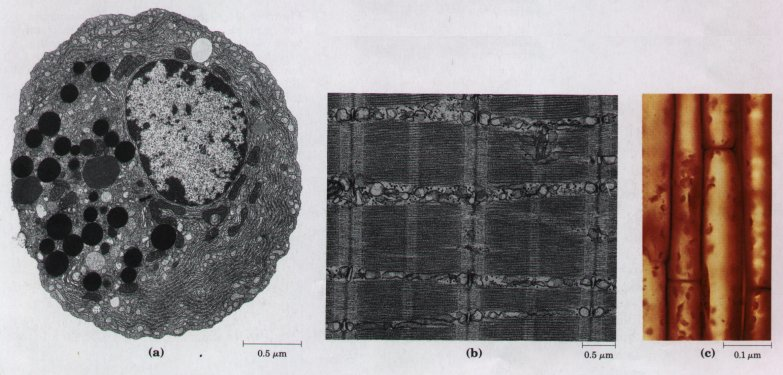
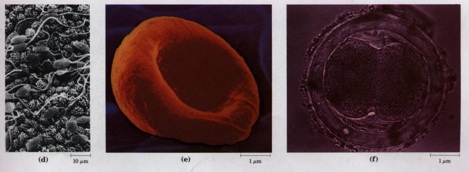
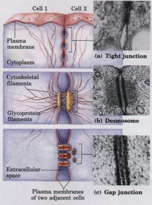
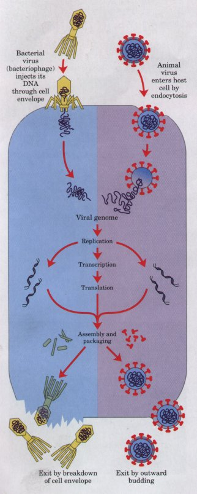
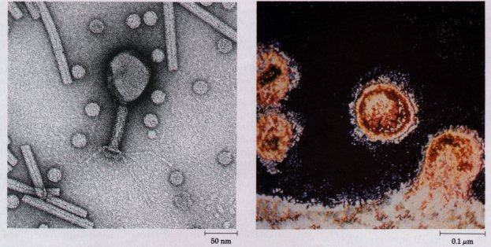
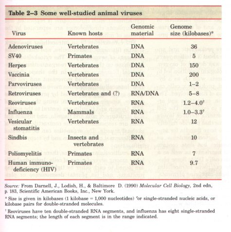

One of the most effective approaches to understanding a biological process is to study purified individual molecules such as enzymes, nucleic acids, or structural proteins. The purified components are amenable to detailed characterization in vitro; their physical properties and catalytic activities can be studied without "interference" from other molecules present in the intact cell. Although this approach has been remarkably revealing, it must always be remembered that the inside of a cell is quite different from the inside of a test tube. The "interfering" components eliminated by purification may be critical to the biological function or regulation of the molecule purified. In vitro studies of pure enzymes are commonly done at very low enzyme concentrations in thoroughly stirred aqueous solutions. In the cell, an enzyme is dissolved or suspended in a gel-like cytosol with thousands of other proteins, some of which bind to that enzyme and influence its activity. Within cells, some enzymes are parts of multienzyme complexes in which reactants are channeled from one enzyme to another without ever entering the bulk solvent. Diffusion is hindered in the gel-like cytosol, and the cytosolic composition varies in different regions of the cell. In short, a given molecule may function somewhat differently within the cell than it does in vitro. One of the central challenges of biochemistry is to understand the influences of cellular organization and macromolecular associations on the function of individual enzymes-to understand function in vivo as well as in vitro.
All modern unicellular eukaryotes-the protists-contain the organelles and mechanisms that we have described, indicating that these organelles and mechanisms must have evolved relatively early. The protists are extraordinarily versatile. The ciliated protist Paramecium, for example, moves rapidly through its aqueous surroundings by beating its cilia; senses mechanical, chemical, and thermal stimuli from its environment, and responds by changing its path; finds, engulfs, and digests a variety of food organisms, and excretes the indigestible fragments; eliminates excess water that leaks through its membrane; and finds and mates with sexual partners. Nonetheless, being unicellular has its disadvantages. Paramecia probably live out their lives in a very small region of the pond in which they began life, because their motility is limited by the small thrust of their microscopic cilia, and their ability to detect a better environment at a distance is limited by the short range of their sensory apparatus.


Figure 2-25 A gallery of difierentiated cells.(a) Secretory cells of the pancreas, with an extensive endoplasmic reticulum. (b) Portion of a skeletal muscle cell, with organized actin and myosin filaments. (c) Collenchyma cells of a plant stem. (d) Rabbit sperm cells, with long flagella for motility. (e) Human erythrocyte. (f) Human embryo at the two-celled stage.
At some later stage of evolution, unicellular organisms found it advantageous to cluster together, thereby acquiring greater motility, efficiency, or reproductive success than their free-living single-celled competitors. Further evolution of such clustered organisms led to permanent associations among individual cells and eventually to specialization within the colony-to cellular difierentiation.
The advantages of cellular specialization led to the evolution of ever more complex and highly difi'erentiated organisms, in which some cells carried out the sensory functions, others the digestive, photosynthetic, or reproductive functions. Many modern multicellular organisms contain hundreds of difierent cell types, each specialized for some function that supports the entire organism. Fundamental mechanisms that evolved early have been further refined and embellished through evolution. The simple mechanism responsible for the motion of myosin along actin filaments in slime molds has been conserved and elaborated in vertebrate muscle cells, which are literally filled with actin, myosin, and associated proteins that regulate muscle contraction. The same basic structure and mechanism that underlie the beating motion of cilia in Pczrocmecium and flagella in Chkzmydomonas are employed by the highly differentiated vertebrate sperm cell. Figure 2-25 illustrates the range of cellular specializations encountered in multicellular organisms.
| The individual cells of a multicellular organism remain delimited by their plasma membranes, but they have developed specialized surface structures for attachment to and communication with each other (Fig. 2-26). At tight junctions, the plasma membranes of adjacent cells are closely apposed, with no extracellular fluid separating them. Desmosomes (occurring only in plant cells) hold two cells together; the small extracellular space between them is filled with fibrous, presumably adhesive, material. Gap junctions provide small, reinforced openings between adjacent cells, through which electric currents, ions, and small molecules can pass. In higher plants, plasmodesmata form channels resembling gap junctions; they provide a path through the cell wall for the movement of small molecules between adjacent cells. Each of these junctions is reinforced by membrane proteins or cytoskeletal filaments. The type ofjunction(s) between neighboring cells varies from tissue to tissue. |  Figure 2-26 Three types of junctions between cells. (a) Tight junctions produce a seal between adjacent cells. (b) Desmosomes, typical of plant cells, weld adjacent cells together and are reinforced by various cytoskeletal elements. (c) Gap junctions allow ions and electric currents to flow between adjacent cells. |
| Viruses are
supramolecular complexes that can replicate themselves in
appropriate host cells. They consist of a nucleic acid
(DNA or RNA) molecule surrounded by a protective shell,
or capsid, made up of protein molecules and, in some
cases, a membranous envelope. Viruses exist in two
states. Outside the host cells that formed them, viruses
are simply nonliving particles called virions,
which are regular in size, shape, and composition and can
be crystallized. Once a virus or its nucleic acid
component gains entry into a specific host cell, it
becomes an intracellular parasite. The viral nucleic acid
carries the genetic message specifying the structure of
the intact virion. It diverts the host cell's enzymes and
ribosomes from their normal cellular roles to the
manufacture of many new daughter viral particles. As a
result, hundreds of progeny viruses may arise from the
single virion that infected the host cell (Fig. 2-27). In
some host-virus systems, the progeny virions escape
through the host cell's plasma membrane. Other viruses
cause cell lysis (membrane breakdown and host cell death)
as they are released. A different type of response results from some viral infections, in which viral DNA becomes integrated into the host's chromosome and is replicated with the host's own genes. Integrated viral genes may have little or no effect on the host's survival, but they often cause profound changes in the host cell's appearance and activity. Hundreds of different viruses are known, each more or less specific for a host cell (Table 2-3), which may be an animal, plant, or bacterial cell. Viruses specific for bacteria are known as bacteriophages, or simply phages (Greek phagein, "to eat"). Some viruses contain only one kind of protein in their capsid-the tobacco mosaic virus, for example, a simple plant virus and the first to be crystallized. Other viruses contain dozens or hundreds of different kinds of proteins. Even some of these large and complex viruses have been crystallized, and their detailed molecular structures are known (Fig. 2-28). Viruses differ greatly in size. Bacteriophage φX174, one of the smallest, has a diameter of 18 nm. Vaccinia virus is one of the largest; its virions are almost as large as the smallest bacteria. Viruses also differ in shape and complexity of structure. The human immunodeficiency virus (HIV) (Fig. 2-29) is relatively simple in structure, but devastating in action; it causes AIDS. |
 Figure 2-27 Infection of a bacterial cell by a bacteriophage (left), and of an animal cell by a virus (right) results in the formation of many copies of the infecting virus. |
 |
|
| Figure 2-28 The structures of several viruses,viewed with the electron microscope. Turnip yellow mosaic virus (small, spherical particles), tobacco mosaic virus (long cylinders), and bacteriophage T4 (shaped like a hand mirror). | Figure 2-29 Human immunodeficiency viruses (HIV), the causative agent of AIDS, leaving an infected T lymphocyte of the immune system. |
Table 2-3 summarizes the type and size of the nucleic acid components of a number of viruses. Some viruses are highly pathogenic in humans; for example, those causing poliomyelitis, influenza, herpes, hepatitis, AIDS, the common cold, infectious mononucleosis, shingles, and certain types of cancer.
Biochemistry has profited enormously from the study of viruses, which has provided new information about the structure of the genome, the enzymatic mechanisms of nucleic acid synthesis, and the regulation of the flow of genetic information.
